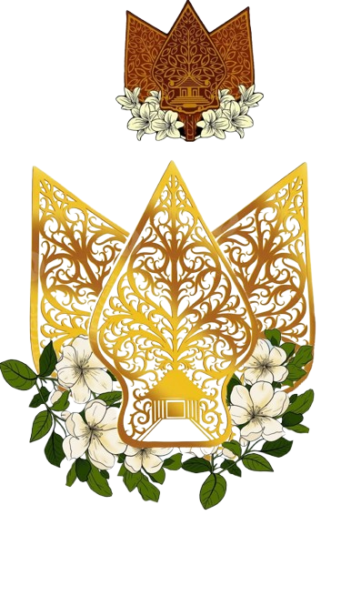

Sekolah Standar Nasional"Berakhlak Mulia, Berprestasi, Berwawasan Global"
Falsafah Budaya: Cageur, Bageur, Bener, Pinter, Singer
Akreditasi A (Unggul)
Siswa Aktif
Rombongan Belajar
Luas Area Sekolah
Kunjungi lokasi SMA Negeri 10 Depok secara langsung